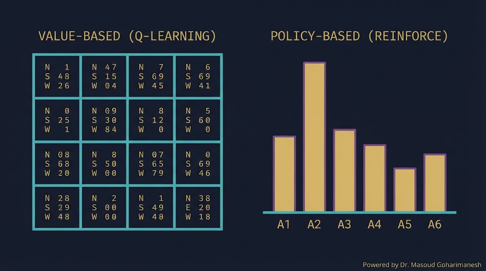
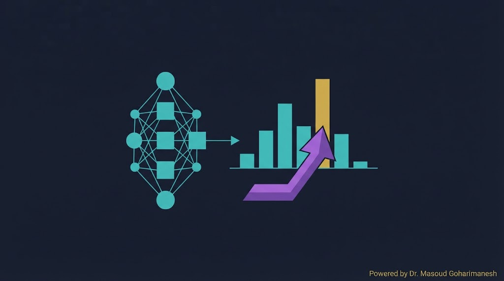
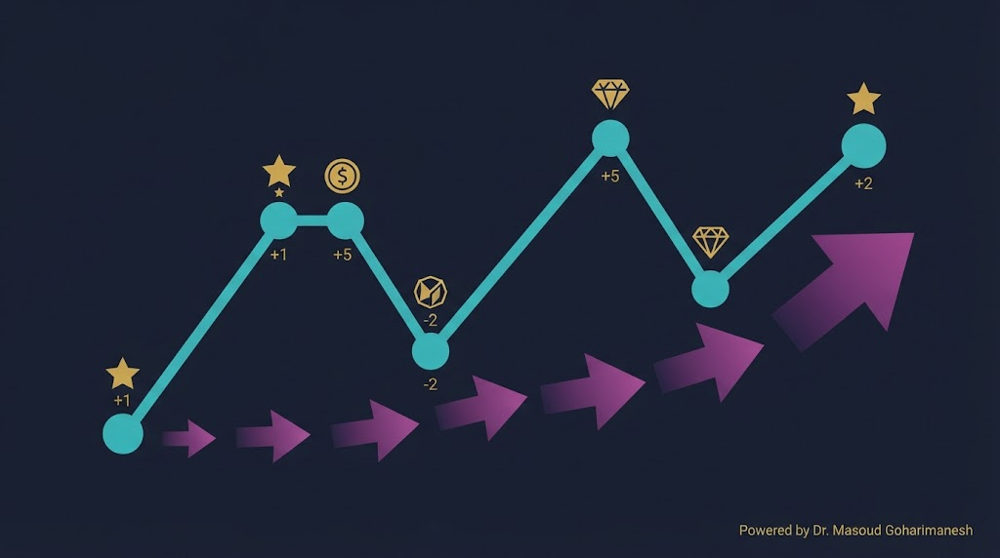
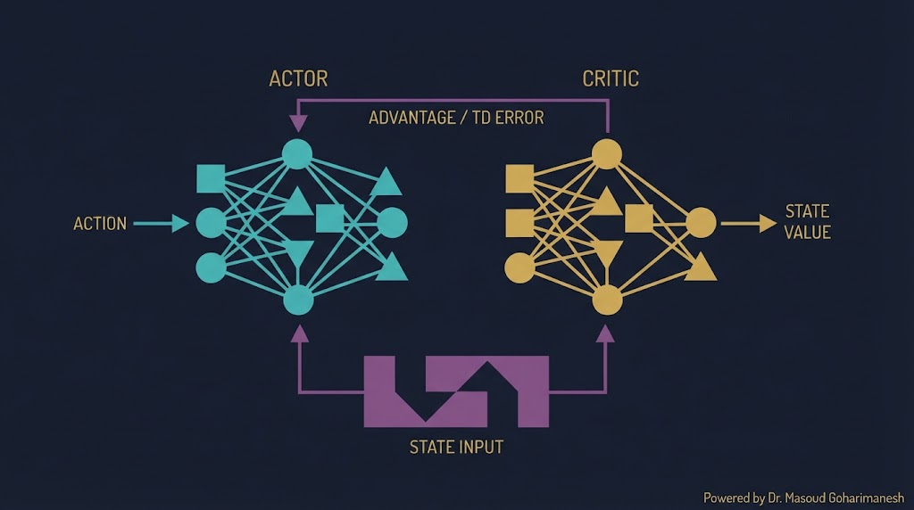
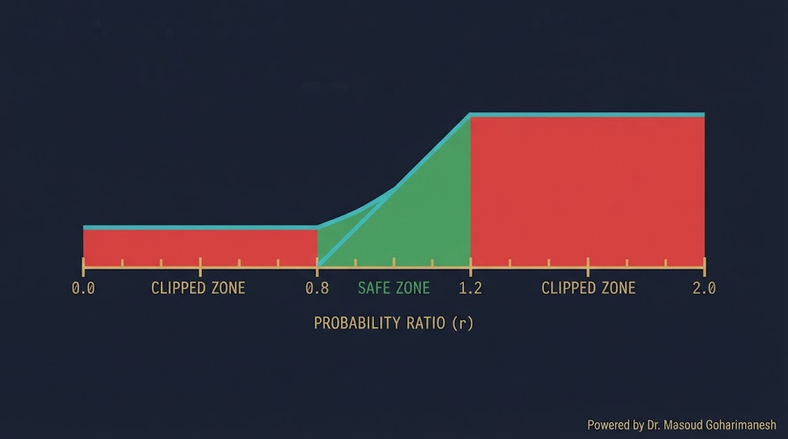
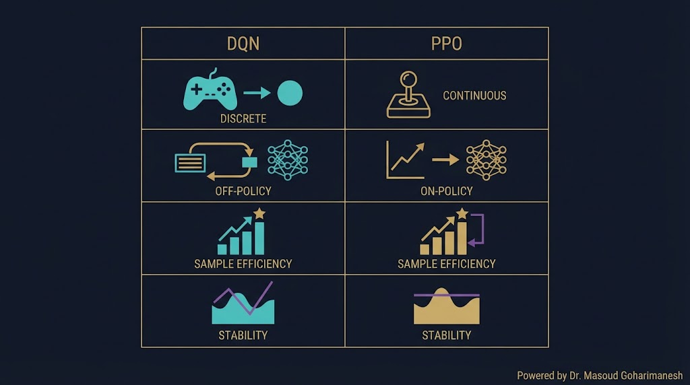
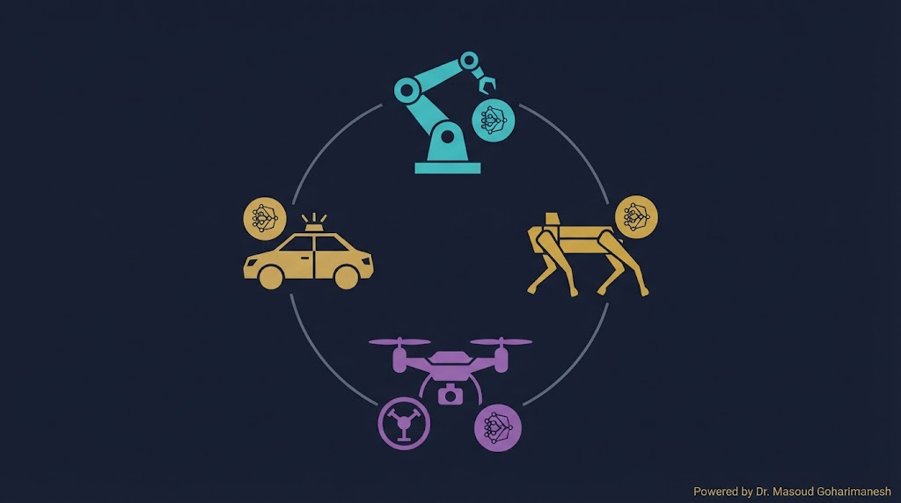

جلسه ۱۵ — Policy Gradient و PPO
جلسه ۱۵ — Policy Gradient و PPO
جلسه ۱۵ — Policy Gradient و PPO
جلسه ۱۵ — Policy Gradient و PPO
 ستاره این جلسه
به یاد شهدای والامقام
ستاره این جلسه
به یاد شهدای والامقامPolicy-Based RL · REINFORCE · Actor-Critic · PPO
When Actions Become Continuous
Q-Network، Experience Replay، Target Network
Policy Gradient، REINFORCE، Actor-Critic، PPO
✅ محدودیت DQN در فضای پیوسته
✅ Policy-Based RL
✅ REINFORCE
✅ Actor-Critic
✅ PPO و Clipping
✅ Stable-Baselines3
DQN عالی است برای محیطهایی با اعمال گسسته (چپ/راست، بالا/پایین). اما در مکانیک، اعمال ما اغلب پیوسته هستند: گشتاور موتور (۰ تا ۱۰۰ نیوتنمتر)، زاویه فرمان (-۳۰ تا +۳۰ درجه)، ولتاژ کنترلر (۰ تا ۲۴ ولت).
Policy Gradient روشهایی هستند که مستقیماً سیاست (Policy) را یاد میگیرند — بدون نیاز به Q-Table یا $\max$ روی اعمال. و PPO امروز پرکاربردترین الگوریتم RL در صنعت و پژوهش است.
مستقیماً روی اعمال پیوسته کار میکند
بدون Q-Table
PPO آموزش پایدارتری دارد
RLHF با PPO آموزش دیده
DQN نیاز دارد $\max_a Q(s,a)$ را حساب کند — برای اعمال پیوسته، باید بینهایت عمل را امتحان کرد!
میتوانیم گشتاور را به ۱۰۰ سطح تقسیم کنیم — اما دقت پایین و بعد بالا
در برخی مسائل (مثل بازی سنگ-کاغذ-قیچی)، بهترین سیاست تصادفی است — DQN نمیتواند

| ویژگی | Value-Based (DQN) | Policy-Based (PPO) |
|---|---|---|
| چه چیزی یاد میگیرد؟ | $Q(s,a)$ — ارزش اعمال | $\pi(a|s)$ — توزیع احتمال |
| فضای عمل | گسسته | گسسته و پیوسته |
| سیاست تصادفی | مشکل | طبیعی |
| پایداری | متوسط | بالا (با PPO) |
| کارایی داده | بالا (off-policy) | متوسط (on-policy) |
مقایسه رفتار این دو رویکرد را ببینید.

Softmax: $\pi(a|s) = \frac{e^{z_a}}{\sum e^{z_i}}$
Gaussian: $\pi(a|s) = \mathcal{N}(\mu_\theta(s), \sigma_\theta(s))$
شبکه Policy از وضعیت $s$، پارامترهای توزیع را میسازد و از آن نمونهگیری میکند.
REINFORCE از Policy Gradient Theorem استفاده میکند: اگر عملی پاداش خوب داد، احتمال آن عمل را زیاد کن.

یک سیاست تصادفی را آموزش دهید تا بهترین عمل را انتخاب کند.
بازده $G_t$ بسیار نویزی است — یادگیری کند
بعد از هر بهروزرسانی باید داده جدید جمع کنی
نرخ یادگیری نامناسب → فروپاشی
Actor-Critic دو شبکه دارد: Actor (سیاست) و Critic (ارزش). Critic به Actor میگوید عملش خوب بود یا بد.

$\pi_\theta(a|s)$ — تصمیمگیرنده
شبکهای که توزیع احتمال را میدهد
$V_\phi(s)$ — ارزیاب
شبکهای که ارزش وضعیت را تخمین میزند
Advantage میگوید: این عمل چقدر بهتر از میانگین اعمال در این وضعیت است؟
عمل بهتر از میانگین — احتمال را زیاد کن
عمل بدتر از میانگین — احتمال را کم کن
عمل متوسط — تغییری نده
این کار واریانس را بهشدت کاهش میدهد — همان چیزی که REINFORCE نداشت.
همزمان Actor و Critic را ببینید.
PPO در سال ۲۰۱۷ توسط OpenAI معرفی شد. ایده اصلی: گامهای بزرگ نرو — تغییرات سیاست را محدود کن تا آموزش پایدار بماند.
کمترین نوسان بین الگوریتمهای RL
نسبت به TRPO سادهتر
RLHF با PPO آموزش دیده!
استاندارد صنعت برای کنترل

پیشفرض — تعادل خوب
پایدارتر اما کندتر
سریعتر اما ناپایدارتر

| ویژگی | DQN | PPO |
|---|---|---|
| فضای عمل | گسسته | گسسته و پیوسته |
| On/Off Policy | Off-policy | On-policy |
| کارایی داده | بالا | متوسط |
| پایداری | متوسط | بالا |
| حساسیت به LR | زیاد | کم |
| کاربرد صنعتی | کمتر | استاندارد |

کنترل پیوسته
راهرفتن
کنترل پرواز
تصمیمگیری
import torch import torch.nn as nn class ActorCritic(nn.Module): def __init__(self, state_dim, action_dim): super().__init__() self.shared = nn.Sequential( nn.Linear(state_dim, 64), nn.Tanh(), nn.Linear(64, 64), nn.Tanh() ) # Actor: توزیع احتمال self.actor = nn.Linear(64, action_dim) # Critic: ارزش وضعیت self.critic = nn.Linear(64, 1) def forward(self, x): features = self.shared(x) logits = self.actor(features) value = self.critic(features) return logits, value
import gymnasium as gym import torch.optim as optim from torch.distributions import Categorical env = gym.make('CartPole-v1') model = ActorCritic(4, 2) optimizer = optim.Adam(model.parameters(), lr=3e-4) gamma = 0.99 eps_clip = 0.2 K_epochs = 4 for episode in range(500): states, actions, rewards, log_probs = [], [], [], [] state, _ = env.reset() done = False # جمعآوری تجربه while not done: state_t = torch.FloatTensor(state) logits, value = model(state_t) dist = Categorical(logits=logits) action = dist.sample() log_prob = dist.log_prob(action) next_state, reward, done, truncated, _ = env.step(action.item()) done = done or truncated states.append(state) actions.append(action) rewards.append(reward) log_probs.append(log_prob) state = next_state # محاسبه بازده returns = [] G = 0 for r in reversed(rewards): G = r + gamma * G returns.insert(0, G) returns = torch.FloatTensor(returns) returns = (returns - returns.mean()) / (returns.std() + 1e-7) # PPO update old_states = torch.FloatTensor(states) old_actions = torch.stack(actions) old_log_probs = torch.stack(log_probs).detach() for _ in range(K_epochs): logits, values = model(old_states) dist = Categorical(logits=logits) new_log_probs = dist.log_prob(old_actions) entropy = dist.entropy() # Advantage (چون Critic داریم) advantages = returns - values.squeeze().detach() # Clipping ratios = torch.exp(new_log_probs - old_log_probs) surr1 = ratios * advantages surr2 = torch.clamp(ratios, 1 - eps_clip, 1 + eps_clip) * advantages actor_loss = -torch.min(surr1, surr2).mean() critic_loss = nn.MSELoss()(values.squeeze(), returns) loss = actor_loss + 0.5 * critic_loss - 0.01 * entropy.mean() optimizer.zero_grad() loss.backward() optimizer.step() print(f"Episode {episode}: reward={sum(rewards)}")
اگر فقط میخواهید PPO را اجرا کنید، Stable-Baselines3 سریعترین راه است.
# نصب pip install stable-baselines3 # آموزش PPO در ۵ خط import gymnasium as gym from stable_baselines3 import PPO env = gym.make('CartPole-v1') model = PPO('MlpPolicy', env, verbose=1) model.learn(total_timesteps=50000) # ذخیره و بارگذاری model.save('ppo_cartpole') model = PPO.load('ppo_cartpole') # ارزیابی obs, _ = env.reset() for _ in range(1000): action, _ = model.predict(obs) obs, reward, done, truncated, _ = env.step(action) if done or truncated: break
[AI] HW15 - نام - شماره دانشجویی به arcslab.uth@gmail.com
جستوجوی پروژههای PPO
جلسه ۱۵ — اصلیتحلیل کد PPO
پشتیبانکدنویسی PPO
پیشنهادیدر Perplexity جستوجو کنید: «PPO robotic control 2024» و ۳ مقاله معتبر پیدا کنید.
سیاست را مستقیم یاد بگیر
سادهترین PG — اما واریانس بالا
ترکیب Actor و Critic — کاهش واریانس
Clipping برای آموزش پایدار
PPO در ۵ خط کد
Next Session: RL in Mechanics — Applications
• RL در کنترل ربات
• Digital Twin با RL
• بهینهسازی مسیر
• پروژههای RL در مکانیک
• OpenAI Gym برای محیطهای مکانیکی